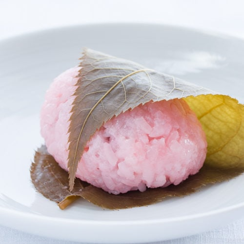

Sakura Mochi

Description
Sakura mochi is a Japanese dessert that is pink, just like the sakura (cherry blossom flowers)
and is made of sweet glutinous rice and filled with a sweet red bean paste.
It is wrapped in a pickled sakura leaf which is edible.
Traditionally, this dessert is enjoyed during Hinamatsuri (Japanese Girls' Day) to celebrate the beginning of spring,
as well as to wish good luck and good health for all of the little girls in the family.
Ingredients
For the Koshian Filling:
- 2 cups azuki beans (or red beans)
- 1 1/3 cups sugar
- 1 teaspoon salt
For the Sweet Mochi Rice Cake:
- 3 cups sweet rice (or glutinous rice)
- 2/3 cups sugar
- 4 1/2 cups water, divided
- 2 drops food coloring
- 16 to 18 pickled young sakura leaves, optional
Steps
Make the Koshian Filling
- Gather the ingredients.
- In a large bowl, soak azuki beans in water overnight.
- Rinse beans and drain.
- Transfer beans to a large pot, add water and bring to a boil.
- Turn down the heat to medium and simmer beans for about 10 minutes.
Skim foam and any residue that floats to the top of the pot.
- Turn down the heat to low and simmer the azuki beans for about 1 1/2 to 2 hours, or until softened.
Stir beans occasionally to make sure that the beans don't stick to the bottom of the pan and burn.
(Most of the liquid should boil off, but the azuki beans will have a slightly watery texture. Don't worry if it looks too watery.
As the koshian filling cools, this water will be absorbed into the beans, and you will end up with a thick, creamy filling.)
- Add sugar and salt into the koshian mixture and stir constantly for about 5 minutes until the sugar is dissolved. Turn off heat.
(Koshian may be stored in the refrigerator for up to 3 days or stored in freezer.)
Make the Sweet Mochi Rice Cake
- Wash rice until water runs clear and drain. Let drained rice stand for 30 minutes
- Heat sugar with 1 cup of water in the microwave for 1 to 2 minutes to dissolve and let cool.
- Add 2 drops of red food coloring to the sugar mixture. This will make the rice pink
- Add the pink sugar mixture to the rice.
- Fill the rice cooker with 3 1/4 cups of water, but please heed the water guidelines according to the measurements of your rice cooker.
Let the rice soak in the pink sugar mixture and water for 1 hour before cooking.
(Allowing the rice to soak in the water will help to ensure that the cooked rice grains are soft and not hard in the center.)
- If available, use the setting on your rice cooker for "glutinous or sweet rice" and cook the rice.
After the rice cooks, don't open the rice cooker and let the rice steam for 30 minutes
- Gently smash the cooked glutinous rice with a shamoji (rice paddle) or spatula.
Allow the cooked rice to cool so that it is warm. (Tip: It's easier to work with mochi if it is warm because it's pliable.)
- While the cooked rice is cooling, soak the pickled sakura leaves in water for 15 minutes to remove the salt.
- Drain the leaves on paper towel.
- Use a piece of saran wrap large enough to generously cover the palm of your hand so that the mochi doesn't stick to your hand.
Take about 2 to 3 tablespoons of mochi and spread on your palm in an oblong shape about 2 1/2 inches long.
Be careful not to spread the mochi too thin, because then your koshian filling will break through the mochi when you are wrapping it
- Place a round 1 to 2 teaspoon scoop of koshian filling near the bottom center of your oblong mochi.
- Fold over the top half of the oblong and seal it by pressing the ends of the glutinous mochi closed.
Repeat until all of the mochi is made.
- Wrap in the sakura leaves.